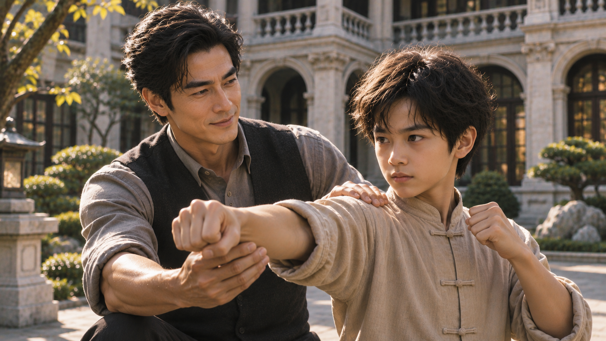
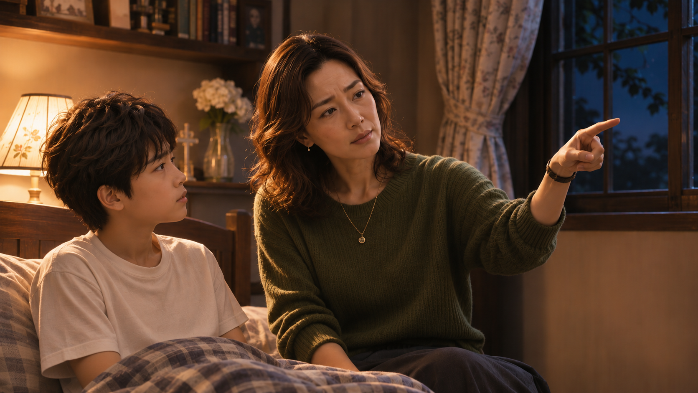
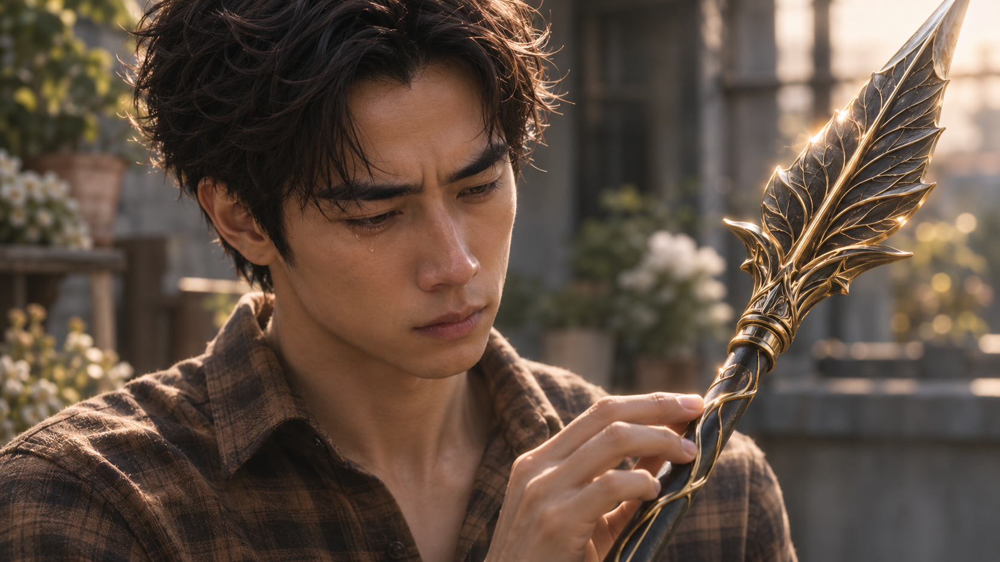
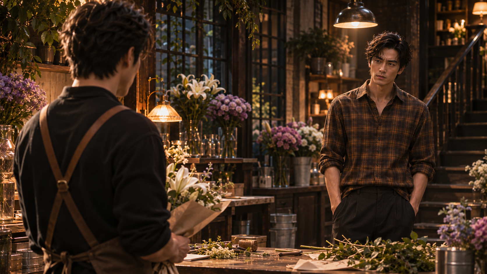
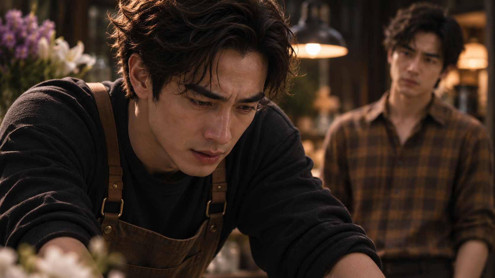
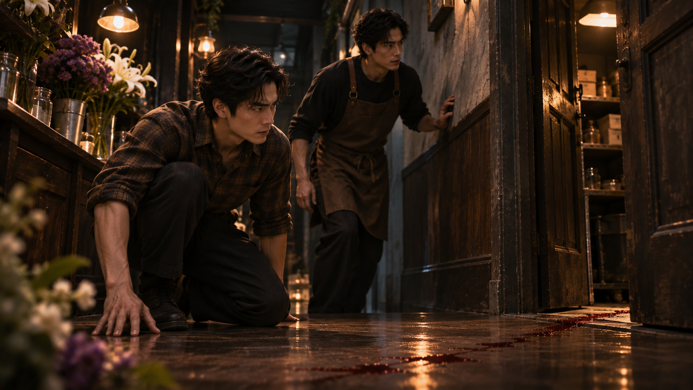
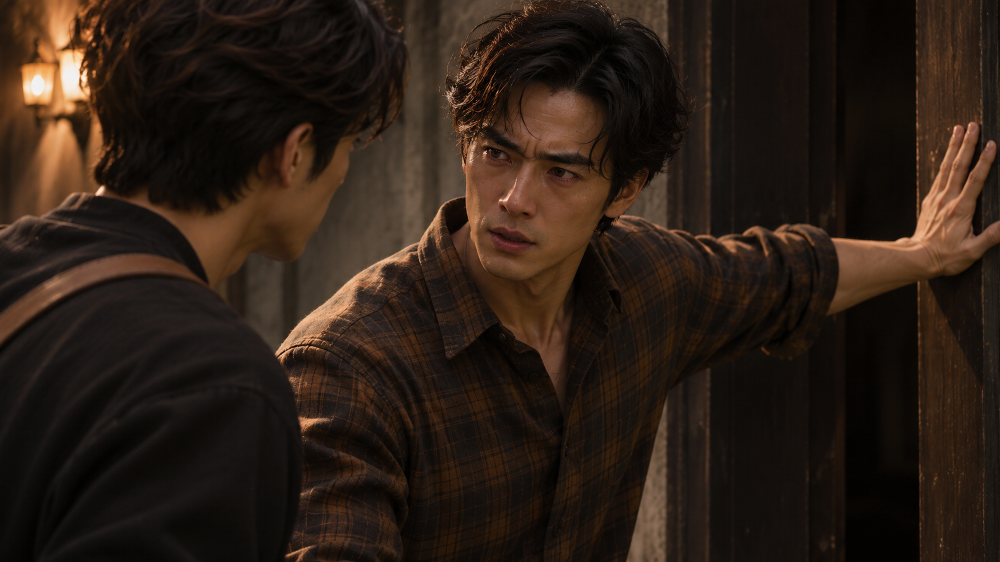
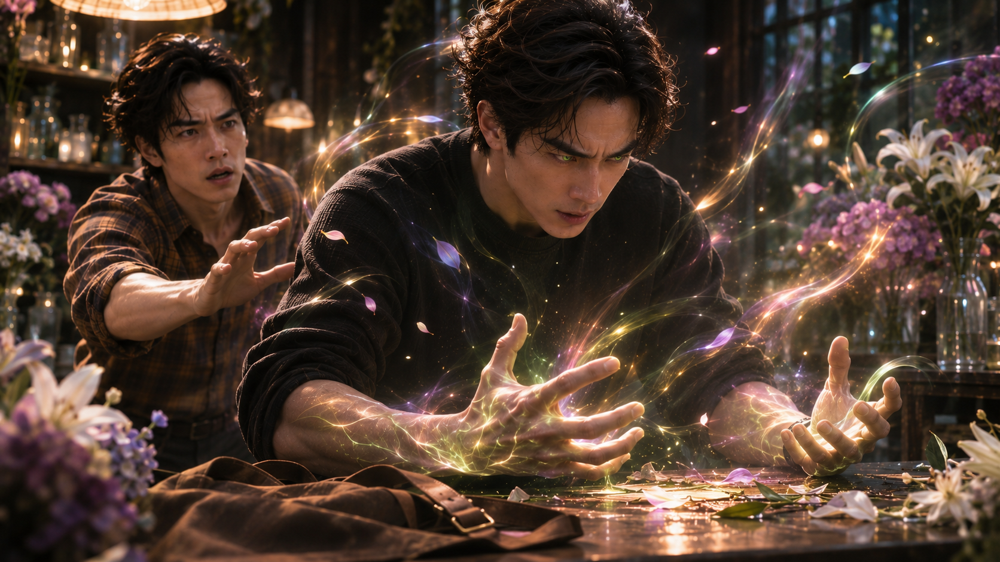
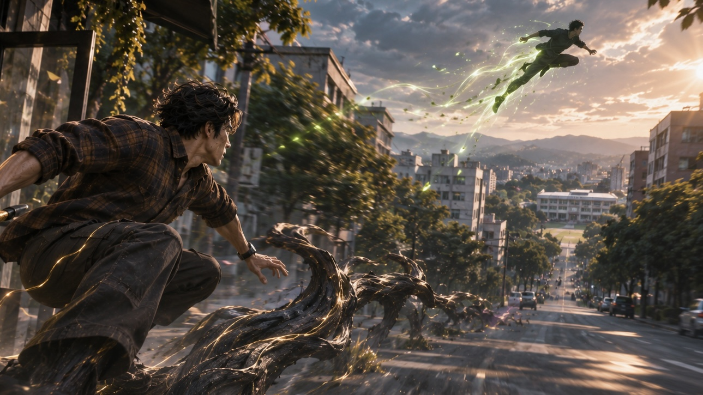

WHITE MAGIC ART STUDIO
第十八章
說不出的名字
術器使。
一種能將自身對至尊聖術師——拉比的信心，化為實體武器的聖術師。
術器的誕生，往往與持有者生命中的某個重要時刻息息相關。
或許是一場試煉。
一次抉擇。
又或是一段讓他決定信任拉比的經歷。
因此，每一件術器都有屬於自己的名字。
那個名字不只是稱呼，更像是持有者與拉比之間，一份獨一無二的見證。
召喚術器，並不一定需要將名字唸出來。
但對某些聖術師而言，親口說出那個名字，仍然有著特殊的意義。
梁景毅的黑金色葉形長槍，自然也有名字。
只是這麼多年來，他從未在人前說過。
比克花店・頂樓
清晨的風吹過屋頂。
遠處的街道已經逐漸熱鬧起來。機車引擎聲、店家拉開鐵門的聲音，偶爾隨著風傳上樓頂。
景毅獨自站在空地中央。
他低頭看著自己的右手。
昨天在與哥哥對戰的時候，那句話忽然又浮現在腦海裡。
「聖術師的力量來自信仰。你現在被憤怒牽著走，連自己的術器都快消失了！」
那時，他滿腦子只想著打倒梁景皓。
憤怒幾乎吞沒了所有念頭。
就連手中的長槍，也在那一刻變得越來越透明。
景毅微微握緊拳頭。
他從來沒有想過，自己的術器竟然會有消失的一天。
更沒有想過，讓它變成那樣的人，會是自己。
昨晚，哥哥用神癒花治好了他的傷。
那些壓在心裡多年的話，也終於有機會說出口。
可是……
景毅再次看向掌心。
他還是想親自確認。
他緩緩伸出右手。
停頓了片刻。
心中喊出了那個名字，
下一秒。
金光亮起。
熟悉的重量，重新落入掌心。
黑金色的葉形長槍，在晨光中完整地顯現。
景毅怔怔望著它。
金色葉脈沿著槍刃延伸，黑色槍身依然堅實，沒有半點昨日那種近乎透明的模樣。
「……還好。」
他輕輕吐出一口氣。
隨後握住槍柄，試著向前刺出。
收槍。
轉身。
再刺。
長槍劃過空氣，動作依舊俐落。
就像過去無數個清晨一樣。
只是這一次，他沒有繼續練下去。
景毅低頭望著長槍。
明明是再熟悉不過的東西。
今天握在手裡，卻有種說不出的感覺。
他伸出手指，輕輕碰了碰槍刃上的金色葉脈。
這把長槍，究竟是從什麼時候開始，成為他生命的一部分？
想著想著。
一段早已塵封的記憶，悄悄浮現。
二十年前・梁家外院
午後。
梁家宅邸的外院裡，不時傳來練武的聲響。
「手再抬高一點。」
梁晉輝站在十三歲的景毅面前。
少年連忙調整姿勢。
「這樣？」
「肩膀放鬆。」
晉輝伸手，輕輕調整兒子的手臂。
「出拳的時候，不要只靠手臂。」
景毅點點頭。
再次向前出拳。
晉輝穩穩接住。

「不錯。」
景毅的眼睛微微一亮。
晉輝鬆開手，示意他先休息。
「景毅，你知道聖術師的力量從哪裡來嗎？」
「家族的血統？」
「那只是其中一部分。」
晉輝拿起一旁的毛巾。
「聖術不只來自家族的繼承，也來自我們的信仰。」
景毅跟了過去。
「信仰？」
「嗯。」
晉輝抬頭望向天空。
「六大元素雖然不同，卻都源自同一個地方。」
「至尊聖術師……拉比？」
「沒錯。」
晉輝點頭。
「祂是我們之中的第一位，也是所有聖術力量的源頭。」
他看向兒子。
「你媽媽應該跟你說過，世人是如何認識祂的吧？」
「有啊。」
景毅點點頭。
「我一直都有跟媽媽去教會。」
晉輝也輕輕點頭。
「我們透過對祂的信仰，能讓我們的聖術產生變化甚至更強！」
「可是爸……」
「嗯？」
「我還是不太明白。」
景毅抬起自己的雙手。
「像你每天教我的這些動作。」
景毅繼續說。
「只要我練得夠熟，不就也能變得更強嗎？」
晉輝看著兒子。
過了一會兒，他輕輕握住景毅的拳頭。
「景毅。」
「嗯？」
「你知道月亮為什麼會發光嗎？」
「因為太陽啊。」
「沒錯。」
晉輝鬆開手。
「月亮本身不會發光。它之所以明亮，是因為有太陽。」
他看向兒子。
「我們也是一樣。」
景毅若有所思。
「所以……拉比就是我們的太陽？」
晉輝微微一笑。
「不只如此。」
他抬手拍了拍景毅的肩膀。
「祂是我們的全部。」
景毅抬起頭。
午後的陽光落在父親身上。
那一刻，他覺得父親說這句話時的神情，與平常談論聖術訓練時很不一樣。
不是命令。
也不是要求。
而是一種非常篤定的相信。
景毅低頭看著自己的雙手。
他還是有些不明白。
當晚・景毅的房間
「媽。」
「嗯？」
「我可以再問一個問題嗎？」
慧萍坐在床邊，正替兒子整理明天要穿的衣服。
聽見景毅的聲音，她抬起頭。
「怎麼啦？」
「爸今天跟我說只要相信拉比就能幫助我提升我的聖術，可是我怎麼確定我有沒有相信祂？」
景毅躺在床上，望著天花板。
「今天他還跟我說，拉比就像我們的太陽。」
「嗯。」
「可是……」
他翻了個身。
「我覺得拉比比較像一顆躲起來的太陽。」
慧萍停下手邊的動作。
「為什麼這麼說？」
「因為我又看不到祂。」
景毅皺著眉頭。
「我知道聖術師都相信祂，也知道教會一直在講祂的事情。」
「可是我沒有真的見過祂啊。」
他看向母親。
「這樣也算相信嗎？」
慧萍想了想。
沒有立刻回答。
她反而伸手指向窗外。
「景毅，你現在看得到太陽嗎？」
景毅看了一眼窗戶。
外面早已一片漆黑。
「當然看不到啊。」
「那你覺得太陽不見了嗎？」
「怎麼可能。」
「為什麼？」
「因為明天早上就會出來啊。」
慧萍笑了笑。
「你怎麼知道？」
「……蛤？」
「你怎麼那麼確定，明天早上一定還看得到太陽？」
景毅愣住。
「因為……」
他想了一會兒。
「一直都是這樣啊。」
「所以，你相信明天太陽還會升起？」
「對啊。」
「即使你現在看不到它？」
「嗯……」
景毅忽然明白母親想說什麼。
但他還是不太服氣。
「可是我至少看過太陽啊。」
慧萍點點頭。
「是啊。」
她伸手替兒子撥開額前的頭髮。
「那你怎麼知道，自己從來沒有看過拉比呢？」
景毅眨了眨眼。
「……我看過嗎？」
「我不知道。」
慧萍回答得很自然。
景毅愣了一下。
「媽！」
慧萍忍不住笑了。
「我又不是拉比，怎麼會知道祂什麼時候跟你見過面？」
「可是……」
「不過啊。」
慧萍輕輕握住兒子的手。
「你真的覺得，只有親眼看見祂的模樣，才算遇見祂嗎？」
景毅安靜下來。
「你爸爸每天教你練習的那些聖術。」
「嗯。」
「你在教會聽過的那些故事。」
「嗯。」
「還有你自己經歷過的事情。」
慧萍看著他。
「難道那些，都沒有讓你對拉比產生過一點點好奇，或是一點點相信嗎？」
景毅想了想。
「……好像有。」
「真的？」
「嗯。」
他有些不好意思地笑了。
「可能……只有一點點吧。」
慧萍的眼睛亮了起來。
「那就很好啊！」
「只有一點點耶。」
「一點點又怎樣？」
慧萍伸出食指與拇指，比出一個很小的距離。
「不要小看這一點點。」
她看著兒子。
「一點點的陽光，你就能知道太陽現在出現了對吧？」
景毅點點頭，
「所以哪怕是因為爸爸教你的事情。」
「還是因為媽媽跟你說的故事。」
她忽然伸手，輕輕搔了搔景毅的肚子。
「也可能是因為你身體裡，那個了不起的聖術！」
「哈哈！媽！」
景毅忍不住縮起身體。
「很癢啦！」
慧萍笑著收回手。
「不管是從哪裡開始的，那都是你認識祂的起點啊。」
景毅慢慢停止笑聲。
慧萍替他拉好棉被。
「弟弟啊。」
「嗯？」
「你想確定自己有沒有相信拉比是單純想要讓自己的聖術更強嗎？」
「不知道....或許只是因為你跟爸都很相信祂，祂感覺對我們家很重要。」
「但你知道嗎？」
她的聲音柔和下來。

「拉比不只是聖術師力量的源頭。」
「祂也創造了這個世界。」
慧萍伸手輕輕碰了碰兒子的額頭。
「當然，也包括你。」
景毅看著母親。
「所以啊。」
慧萍微微一笑。
「你不需要急著現在就要找到答案。」
「也不需要一定發生什麼很厲害、很戲劇性的事情，才算真正遇見祂。」
她停了一下。
「也許有一天，你會用屬於自己的方式認識祂，然後讓祂成為你最好的朋友。」
「但那如果我一直都只能有一點點呢？祂會不會不開心？」
景毅小聲問。
慧萍沒有笑他。
只是輕輕握住他的手。
「一點點就夠了。」
景毅望著母親。
良久。
「……好。」
慧萍滿意地點點頭。
「好啦，時間不早了。」
她站起身。
「明天還要早起練習，快睡吧。」
「媽。」
「又怎麼了？」
「再綻放的光芒...」
景毅忽然輕輕哼起一段歌曲。
慧萍停住腳步。
那是她最喜歡的一首詩歌。
一首關於在黑暗中，依然相信光會到來的歌。
「會讓你特別的珍惜...」
慧萍聽了幾個音，便自然地接著唱下去。
景毅笑了。
「歌詞裡的『光芒』，就是在講祂對吧？難怪妳這麼喜歡這首歌。」
慧萍挑眉。
「怎麼？現在不嫌媽媽每天唱同一首歌了？」
「我哪有嫌棄過。」
「是嗎？」
「……沒有吧。」
慧萍忍不住笑出聲。
景毅也跟著笑了。
過了一會兒，他拉了拉棉被。
「媽。」
「嗯？」
「妳今天……可以再唱一次嗎？」
慧萍看著兒子。
那雙眼睛裡，浮現溫柔的笑意。
「當然可以啊。」
她重新坐回床邊。
替景毅把棉被蓋好。
一隻手輕輕撫過他的頭髮。
接著，熟悉的旋律再次在房間裡響起。
景毅閉上眼睛。
窗外仍是一片漆黑。
但這一次，他沒有再追問那顆看不見的太陽究竟在哪裡。
他只是靜靜聽著。
直到睡意漸漸湧上。
現在・比克花店頂樓
風輕輕吹過。
景毅緩緩放下長槍。
二十年前的旋律，彷彿還留在耳邊。
他低頭望著槍刃。
黑色金屬上的葉脈，在晨光下泛著細緻的光澤。
他忽然想起，自己第一次召喚出這把長槍時的心情。
那時的他，還沒有想過太多。
只是覺得不可思議。
原來那些從小聽過的故事、父親說過的話，還有母親一遍又一遍唱給他的歌……
真的有一天，會以這樣的形式出現在自己手中。
後來，他漸漸習慣了。
習慣它的重量。
習慣召喚時的金光。
也習慣了在每一次戰鬥中，將它握在手裡。
它曾陪著他度過無數場試煉。
也讓他一次又一次體會到，信任拉比究竟能帶來多大的力量。
久而久之，他幾乎忘了。
自己最初是如何開始相信的。
景毅輕輕轉動槍柄。
父親的聲音，再次浮現在耳邊。
「我們的力量，來自信仰。」
還有母親那句——
「不要小看這一點點。」
景毅的動作慢慢停了下來。
他忽然笑了。
「……原來是這樣啊。」
他曾經以為，這把長槍是自己努力修練、經歷無數戰鬥後，才真正掌握的力量。
但如果沒有父親當年的教導。
沒有母親在那些夜晚，耐心陪著他說話。
或許，他根本不會以同樣的方式認識拉比。
也不會有今天的自己。
景毅望著掌心。
原來，父母早就在他還不明白的時候，將那份信心一點一滴地交給了他。
而他竟然差點忘了。
昨天，那把幾乎消失的長槍，再次浮現在眼前。
景毅握緊槍柄。
他忽然覺得胸口有些發悶。
這些年來，他一直在意著父親對哥哥的期待。
在意父親是不是更看重梁景皓。
在意自己究竟做得夠不夠好。
卻很少想起，父親也曾經像那天下午一樣，握著他的拳頭，一遍又一遍教他出招。
每當他做對了，父親就會點點頭。
說一句。
「不錯。」
景毅低下頭。
那些畫面，如今想起來，竟然清楚得不得了。
他一直以為，自己還有很多時間。
有時間讓父親看見自己的成就。
有時間證明自己。
也有時間，把那些不曾說出口的話慢慢說清楚。
可是母親已經不在了。
而他與父親之間，也不知從什麼時候開始，隔了那麼多說不出口的話。
景毅輕輕吐出一口氣。
「……我到底在跟哥爭什麼啊。」
風從身旁吹過。
他沒有再說下去。
只是低頭看著那把長槍。
昨天，他竟然差點親手失去它。
景毅伸出手，慢慢撫過槍身上的金色葉脈。
母親的歌聲，忽然又在耳邊響起。
那是他聽過無數次的旋律。
以前總覺得，媽媽怎麼老是唱同一首歌。
如今，卻連想再聽她唱一次，都已經不可能了。
景毅的指尖停住。

「……媽。」
他的聲音很輕。
一滴眼淚落在手背上。
他怔了一下。
隨即有些不好意思地笑了。
「……真是的。」
景毅抬手擦了擦眼角。
過了一會兒，他再次望向長槍。
這把術器的名字，依然清晰地留在心裡。
就像母親的歌聲一樣。
這麼多年，從來沒有真正離開過。
景毅握緊槍柄。
「……謝謝。」
他沒有說出術器的名字。
只是安靜地站在晨光裡。
這一次，他沒有急著收起長槍。
比克花店・一樓
花店裡，早晨的陽光透過落地玻璃灑進來。
工作檯上攤著包裝紙、緞帶與幾把花剪。
景皓已經換上工作圍裙，正低頭整理客人的預訂花束。
聽見樓梯傳來腳步聲，他沒有抬頭。
「你在樓上待很久耶。」
「嗯。」
景毅走下最後幾階樓梯。
「想了一點事情。」
「想完了？」
「差不多吧。」
景皓笑了笑。
「那就好。」
景毅走進一樓店裡。
他原本只是隨意看了看，目光卻不知不覺停在景皓身上。
景皓正低頭修剪花材。
剪去多餘的枝葉，調整花朵的高低，再將包裝紙俐落地折起。
他的動作十分熟練，幾乎沒有停頓。
景毅看得有些出神。
早上也是這樣。
他出來房間時，景皓已經準備好早餐，甚至還一邊確認昱鎧上學要帶的東西。
那副理所當然的模樣，讓他一時間有些不習慣。
畢竟，他們是在同一個家裡長大的。
從小到大，梁家的生活起居幾乎都有專人打理。別說準備三餐，就連庭院裡的花草，也輪不到他們親自照顧。
而眼前這個人，卻能如此自然地做著這些事。
景毅望著哥哥。
那雙曾經握他一同接受父親訓練的手，如今正仔細地替花束繫上緞帶。
他忽然覺得有些不可思議。
十年不見。
原來哥哥已經變得這麼不一樣了。
景皓將完成的花束放到一旁，又順手整理起工作檯上的枝葉。
景毅沒有移開目光。
他不知道哥哥是從什麼時候開始學會這些事情的。
也不知道，這十年來，景皓究竟經歷過多少自己不曾參與的日子。
只是看著他熟練而從容的模樣，心裡竟悄悄生出幾分佩服。
景毅輕輕笑了一下。
隨後，他的目光不經意掃過地板。
幾處暗紅色的痕跡，仍留在木質地板上。
他的笑意慢慢淡去。
昨晚的事情，再次浮現在腦海裡。
「……哥。」
「嗯？」
「昨天我應該把這裡弄得一團亂吧。」
景皓抬起頭。
「蛤？」
「抱歉。」
景毅看著地板。
「還要麻煩你收拾。」
景皓愣了一下。
隨即皺起眉頭。
「欸，我不是說了嗎？」
「說什麼？」
「是重新學著當兄弟，」
景皓把手中的緞帶拉緊。
「不是突然要你變得這麼客氣。」
景毅抬頭看著他。
忍不住笑了。
「……白痴。」
景皓滿意地點點頭。
「這樣才對嘛。」
他低頭繼續整理花束。
景毅則走到一旁，靠在木櫃前。
陽光落在他的棕色格子襯衫上。
片刻後，景皓忽然開口。
「對了。」
「嗯？」
「其實你不用特別留下來陪昱鎧啦。」
景毅看向他。
景皓一邊綁著花束，一邊說：
「我知道你現在是院長，醫院應該很多事情要忙吧？」
「所以？」
「所以你可以先回去啊。」
景皓語氣自然。
「昱鎧那邊，我會跟他說。」
景毅皺起眉頭。
「……你認真的？」
「當然啊。」
景皓抬頭。
「不然咧？」
景毅望著他。
「哥。」
「嗯？」
「你昨天才跟魔君交手耶。」
景皓手上的動作微微一頓。
「……我知道。」
「而且我們根本還沒搞清楚，那些傢伙到底想幹嘛。」
景毅站直身體。
「你覺得這種時候，我有辦法安心回醫院？」
「可是——」
「而且我早上也答應昱鎧了。」
景毅打斷他。

「我會留下來。」
他停了一下。
「我是真的喜歡那孩子。」
景皓抬起頭。
景毅看著他。
「他是我姪子。」
「如果那些魔君又出現……」
「所以。」
景皓忽然開口。
景毅停住。
景皓沒有看他。
只是低頭望著手中的花束。
「……我打算今天就帶昱鎧離開。」
花店裡安靜了一瞬。
「……什麼？」
景毅皺起眉頭。
景皓放下緞帶。
「等他今天放學，我就帶他走。」
「去哪？」
「……」
「哥？」
景皓沒有回答。
他重新拿起包裝紙。
「總之先離開桃園。」
景毅看著他。
「所以你已經決定了？」
「嗯。」
「那你打算去哪？」
景皓低頭整理花束。
「……還不知道。」
「不知道？」
「也許美國。」
他停了一下。
「或者韓國。」
「……」
「我會再想辦法。」
景毅望著哥哥。
他原本只是覺得驚訝。
但聽到這裡，心裡某個熟悉的感覺，卻慢慢浮了上來。
「哥。」
「嗯？」
「你又打算這樣突然消失？」
景皓手上的動作停了一瞬。
「……什麼意思？」
「你知道我的意思。」
景毅走近一步。
「爸呢？」
「……」
「景瑜呢？」
景皓沒有回答。
「還有我呢？」
景皓終於抬起頭。
「景毅，現在不是說這些的時候。」
「那什麼時候才是？」
景毅的聲音沉了下來。
「你一直到剛剛還說我們可以重新開始。」
「我知道。」
「你也說過，沒有那麼在意過去了。」
「我知道。」
景皓的聲音有些發緊。
但景毅沒有退開。
「那你現在是在幹嘛？」
景皓握緊手中的包裝紙。
「我是為了昱鎧。」
「我知道你是為了他。」
景毅放緩語氣。
「但你至少可以先跟我們商量吧？」
景皓沒有回答。
景毅繼續說：
「你昨天也看到了。」
「那個魔君誇張的魔力....」
「我知道。」
「那你更不應該一個人帶著昱鎧亂跑。」
景皓低下頭。
「……就是因為這樣。」
景毅停住。
景皓望著手中的花束。
「昨天那個玩火的傢伙，說他只是來『借點東西』。」
他停了一下。
「我一直在想那句話。」
景毅皺起眉頭。
「……」
「如果他真正想找的不是我，也不是你呢？」
景皓抬起頭。
「如果是昱鎧呢？」
景毅的神情微微一變。
景皓低下頭。
「他才十歲。」
他的聲音很輕。
「他才剛知道自己是聖術師。」
景毅沒有說話。
「我不能讓他繼續待在這裡冒險。」
景毅沉默了一會兒。
「所以你就打算帶著他，去一個連你自己都不知道安不安全的地方？」
景皓沒有回答。
「哥。」
景毅走近一步。
「我不是要阻止你保護他。」
「……」
「我只是希望你不要又一個人決定所有事情，你不是就很討厭爸這樣對你嗎？」
景皓垂下眼睛。
景毅看著他。
「我們昨天才剛把話說開。」
「你真的又要讓你的家人找不到你？」
景皓握住工作檯邊緣。
「景毅……」
「這次又要多久？」
景毅望著他。
「一年？」
「……」
「五年？」
景皓的手指逐漸收緊。
「還是下一個十年？」
「我不知道！！」

景皓猛地轉身。
怒吼聲在花店裡迴盪。
景毅愣住。
景皓站在原地。
胸口微微起伏。
他似乎也沒想到自己會突然喊出來。
兩人沉默了片刻。
景皓慢慢移開視線。
「……抱歉。」
景毅沒有回答。
景皓低下頭。
「我真的不知道。」
他的聲音已經不再像剛才那樣強硬。
「我不知道該去哪裡。」
「也不知道哪裡才是安全的。」
他抬起手，疲憊地揉了揉額頭。
「可是我不能什麼都不做。」
景毅望著哥哥。
景皓深吸一口氣。
「我已經……」
他停住。
像是有什麼話卡在喉嚨裡。
良久。
「我不能再失去昱鎧了。」
景毅沒有說話。
他想起昨晚。
想起哥哥說起十年前的事情時，那種壓抑了太久的神情。
也想起今天早上，景皓蹲在玄關前替兒子整理制服的模樣。
景毅輕輕吐出一口氣。
他心情也開始矛盾了起來，因為他不是不能理解，
兩人就這樣沈默了一陣子。
景皓伸手拿出手機。
「總之，我得先聯絡碧雲姐。」
景毅微微一愣。
「碧雲姐？」
「嗯。」
景皓低頭尋找聯絡人。
「她對昱鎧很重要，這件事至少得先跟她說。」
他按下通話鍵。
嘟——
嘟——
嘟——
沒有人接聽。
景皓皺起眉頭。
「奇怪……」
就在這時。
一陣熟悉的手機鈴聲，忽然從花店深處傳來。
兩人同時停住。
景毅轉頭。
「……哥？」
景皓也抬起頭。
那陣鈴聲仍在持續。
不是從他的手機傳出來的。
而是從店裡某個地方。
景毅皺起眉。
「那是碧雲姐的手機？」
景皓的表情逐漸變了。
他立刻掛斷電話。
鈴聲隨之停止。
花店恢復安靜。
景皓盯著手機。
「……不對。」
「怎麼了？」
「碧雲姐的手機從來不離身。」
景毅看向店內深處。
景皓已經快步走了過去。
「碧雲姐？」
沒有回應。
「碧雲姐！」
他打開休息室的門。
空的。
接著是後方的工作間。
同樣沒有人。
景毅跟在他身後。
一路上，他不時低頭看向地板。
那些暗紅色的痕跡，似乎越往裡面越明顯。
他心裡漸漸升起一股不安。

「哥……」
景皓沒有停下腳步。
「碧雲姐！」
他推開另一扇門。
仍然沒有人。
最後，兩人來到儲藏間。
景皓握住門把。
喀。
門開了。
裡頭光線昏暗。
堆放著包裝材料、花器，以及幾箱尚未整理的雜物。
景皓快速掃了一眼。
「……不在這裡。」
他轉身準備離開。
然而。
景毅沒有動。
他的目光停在儲藏間深處。
臉上的血色，一點一點褪去。
「……哥。」
景皓回頭。
「嗯？」
景毅的聲音有些發顫。
「你……沒看到嗎？」
景皓皺起眉。
「看到什麼？」
景毅沒有立刻回答。
他低頭看了一眼地板。
「你有看到這些血跡嗎？」
景皓低頭。
木質地板乾乾淨淨。
除了幾片掉落的葉子，什麼都沒有。
「……什麼血跡？」
景毅的呼吸微微一滯。
他又看了一眼自己腳邊。
那些暗紅色的痕跡，從花店前方一路延伸到這裡。
他忽然想起剛才自己對哥哥說的話。
「昨天我應該把這裡弄得一團亂吧。」
景皓當時的反應。
不是不在意。
而是……
他根本沒有看見。
「……難道說？」
景毅低聲說。
景皓皺起眉頭。
「什麼？」
景毅慢慢抬起頭。
「哥。」
他的聲音沉了下來。
「這些血跡……不是我的。」
下一瞬間。
景毅的虹膜泛起翠綠色微光。
木瞳術——
護盾。
他從來不需要刻意啟動這項能力。
但此刻，他終於明白自己與哥哥看見的景象，為何會如此不同。
有東西在干擾這裡的認知。
不。
不只是干擾。
而是刻意讓某些東西，從景皓的感知中消失。
景毅緩緩環視四周。
他的目光掠過儲藏間的架子。
牆壁。
天花板。
最後，停在景皓身後。
那裡，有一小塊不自然的能量波動。
像是有什麼東西，正緊緊貼附在牆面上。
景毅的眼神一沉。
「哥，別動。」
「什——」
金光驟然閃過。
黑金色葉形長槍出現在景毅右手。
他握住槍柄，向前踏出一步。
隨即擲出！
咻——！
長槍掠過景皓身側。
砰！
槍刃釘入後方的木牆。
一聲尖銳而短促的異響，猛然響起。
景皓驚得回頭。
「景毅！你幹什——」
他的聲音戛然而止。
槍刃下方。
一隻手掌大小、長著暗紅色翅膀的怪異飛蛾，正被釘在牆上。
牠的身體迅速崩散，化為細碎的黑色灰燼。
「……惡魔？」
景皓愣了一下。
下一秒，他才看見腳邊原本不存在的血跡。
「這到底是……」
「哥。」
景毅的聲音打斷了他。
景皓正要往儲藏間走，景毅卻立刻伸手攔住。
「不要進來。」
「怎麼了？」
景毅看了一眼儲藏間深處。
昏暗的角落裡，張碧雲倒在地上，已經沒有反應。
她的左肩有一大塊肉缺損，衣物凌亂，臉上仍殘留著驚恐的神情。
景毅的目光停在那處傷痕上。
那不像是普通惡魔的攻擊。
他想起昨天魔君襲擊的事情，
心裡浮現一個令人不安的猜測。
「哥……」
景毅轉過身，擋住哥哥的視線。
「碧雲姐已經死了。」
「……什麼？」
景皓愣住。
「你說什麼？」
他下意識想往前走。
景毅卻沒有讓開。
「不要過來。」
「景毅，讓開！」
「哥，你先聽我說！」
「我們都是醫學院出身的！你到底在擋什麼？！」
「不是因為你！」
景毅提高了聲音。
「是昱鎧！」

景皓停住腳步。
景毅看著他，一字一句地說：
「他還控制不好讀心術。如果他不小心讀到你看到的東西……」
景皓的表情慢慢僵住。
「……他就會看見碧雲姐的樣子。」
景毅沒有回答，只是沉重地點了點頭。
景皓站在門外。
他的視線越過弟弟的肩膀，卻始終沒有看見儲藏間深處的景象。
「哥，相信我。」
景毅的聲音低了下來。
「你不會希望昱鎧看到她現在的樣子。」
景皓沒有回答。
他只是站在原地。
像是忽然失去了思考的能力。
碧雲姐。
那個這些年來，一直陪著他照顧昱鎧的人。
那個今天早上，他還以為只是提早出門的人。
如今卻……
景皓緩緩低下頭。
「……怎麼會？」
景毅沒有說話。
「怎麼會這樣……」
景皓的聲音越來越低。
過了一會兒。
他忽然抬起頭。
「……昱鎧。」
景毅看向他。
「哥？」
「昱鎧……」
景皓往後退了一步。
他的眼神逐漸變了。
原本的悲傷，忽然被另一種更強烈的情緒取代。
恐懼。
如果那些魔君已經來過花店。
如果碧雲姐的遭遇不是偶然。
如果他們真正的目標……
「……不行。」
景皓喃喃說。
景毅皺起眉。
「哥？」
「我得去找他。」
景皓猛地轉身。
「我現在就得去找昱鎧！」
「等等！」
景毅伸手想拉住他。
但就在這時。
花店裡忽然亮起一道微弱的綠光。
兩人同時停住。
工作檯上的鮮花。
櫥窗旁的盆栽。
甚至那些已經包裝完成、準備交給客人的花束。
一朵接著一朵，泛起細緻的光芒。
景毅瞳孔一縮。
「哥……？」
花瓣開始微微顫動。
下一瞬間。
無數細小的光點，從花朵之中浮現。
如同被無形的風牽引，朝景皓聚攏。
「你在幹嘛？！」
景毅驚呼。
景皓沒有回答。
他閉上眼睛。
雙手微微握緊。
花語。
大量花朵的精華，正被他迅速吸收。
空氣中的花香逐漸變淡。
工作檯上，原本鮮豔的花瓣也慢慢失去了色澤。
景毅望著這一幕。
「哥！」
「我得去學校。」

景皓睜開眼睛。
他的虹膜泛起明亮的翠綠色。
但聲音仍然在顫抖。
「我得親眼確認昱鎧沒事。」
「我跟你一起去！」
「來不及了！」
景皓轉身衝向門口。
景毅連忙跟上。
「哥！」
景皓推開花店大門。
陽光迎面灑落。
他向前踏出一步。
下一瞬間，整個人猛地躍起！
一道綠色身影掠過街道上方。
轉眼間，已經消失在遠處的建築之間。
「梁景皓！！」
景毅衝出店門。
他抬頭望向哥哥離去的方向。
「……這傢伙！」
景毅咬緊牙關。
下一秒。
一道金光在他掌心亮起。
黑金色葉形長槍再次現身。
與此同時。
深沉的木之聖術沿著地面迅速蔓延。
玄武木。
堅硬的黑色木質結構從地面升起，隨著他的動作向前延伸。
景毅踏上玄武木。
身影隨即向前疾衝。
